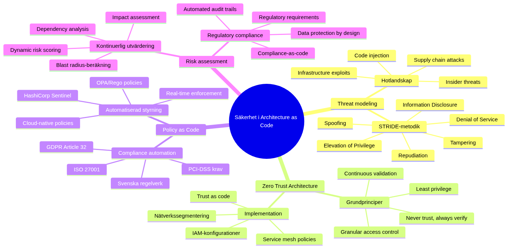

Security in Architecture as Code
Security forms the backbone in successful Architecture as Code-Architecture as Code-implementation. This chapter explores how security principles integreras from forsta design-fasen through automatiserad policy enforcement, proaktiv hothantering and continuous compliance-monitoring. Through treating security as code creates organisationer robust, skalbara and auditerbara security solutions.
Säkerhetsarkitekturens dimensioner

Mindmappen illustrerar the complex sambanden between different security aspects in Architecture as Code, from threat modeling and Zero Trust Architecture to Policy as Code and continuous risk assessment. This holistic view is crucial to understand how security integreras throughgående in code-based arkitekturer.
Kapitelets omfattning and goals
SäkerhetsChallengesna in dagens digitala landskap requires a Fundamental omvärdering of traditional säkerhetsmetoder. When organisationer antar Architecture as Code to handle growing komplexitet in sina IT-environments, must security strategies is developed parallellt. This chapter vägleder läsaren through a comprehensive understanding of how security integreras naturligt and effektivt in code-based arkitekturer.
Traditionella säkerhetsmodor, byggda for static environments with clear perimetrar, becomes snabbt outdated in cloud-based, mikroservice-orienterade arkitekturer. instead of treat security as a separat domän or efterkonstruktion, must modern organisationer anamma security-that-code-principles where security decisions are codified, versionhanteras and automatiseras together with resten of architecture.
Swedish organizations navigerar particularly complex säkerhetslandskap. GDPR-compliance, MSB:s guidelines for critical infrastructure, finansiella regulatory requirements and sector-specific security standards creates A multidimensionellt requirementsbild. simultaneously driver digitaliseringsinitiativ need of snabbare innovation and shortre time-to-market. Architecture as Code offers solution by automatisera compliance-controls and enable "secure by default" arkitekturer.
This chapter behandlar security ur A helhetsperspektiv where technical Architecture as Code-implementations, organizational processes and regulatory requirements samverkar. Läsaren may in-depth understanding for threat modeling, risk assessment, policy automation and incident response in code-based environments. Särskild attention ges åt sektion 10.6 as introduces advanced säkerhetsarkitekturmönster for enterprise-environments.
Teoretisk grund: Security Architecture in The digitala tidsåldern
Paradigmskiftet from perimeterskydd to zero trust
The traditional security philosophy was built on the assumption about a clear gräns between "insidan" and "utsidan" of organisationen. Nätverksperimetrar, brandväggar and VPN-solutions createde a "hård utsida, mjuk insida" modell where resurser within perimetern implicit betraktades as betrodda. This paradigm worked when the flesta resurser var fysiskt lokaliserade in kontrollerade datacenter and user arbetade from fasta kontor.
Modern operations demolerar These antaganden systematiskt. Molnbaserade services distribuerar resurser across multipla providers and geografiska regioner. Remote-arbete does användarnas nätverk to säkerhetsperimeterens forlängning. API-driven architecture creates mängder of service-to-service kommunikation as traditional perimeterkontroller not can handle effektivt.
Zero Trust Architecture (ZTA) represents The necessary evolutionen of säkerhetsfilosofin. Grundprincipen "never trust, always verify" means to each user, enhet and nätverkstransaktion valitheir explicitly oavsett location or previous autentisering. This requires granular identitetshantering, continuous posture assessment and policy-driven access controls.
in Architecture as Code-context enables ZTA systematic implementation of trust policies through Architecture as Code. Nätverkssegmentering, mikrosegmentering, service mesh policies and IAM-configurations are defined deklarativt and enforced konsistent across all environments. This creates "trust as code" where security decisions becomes reproducerbara, testbara and auditerbara.
Threat modeling for code-based arkitekturer
Effective security architecture begins with in-depth understanding of hotlandskapet and attack vectors as is relevanta for The specific architecture. Threat modeling for Architecture as Code-environments differs markant from traditional application threat modeling by include infrastructurenivån, CI/CD-pipelines and Architecture as Code-automation tools as potentiella attack surfaces.
STRIDE-metodologin (Spoofing, Tampering, Repudiation, Information Disclosure, Denial of Service, Elevation of Privilege) provides systematic framework to identify säkerhetshot at different arkitekturnivåer. For Architecture as Code-environments must STRIDE appliceras at Architecture as Code, deployment pipelines, secrets management systems and runtime environments.
Supply chain attacks represents particularly critical hot for code-based arkitekturer. When infrastructure are defined through tredjepartsmoduler, container images and externa APIs are created significant dependencies as can komprometteras. SolarWinds-attacken 2020 demonstrerade how sofistikerade motståndare can infiltrera utvecklingsverktyg to reach downstream targets.
Code injection attacks may new dimensioner when Architecture as Code exekveras automatically without human granskning. Malicious Terraform modules, korrupta Kubernetes manifests or komprometterade Ansible playbooks can resultera in privilege escalation, data exfiltration or denial of service at architecture level.
Insider threats must also omvärtheir for code-based environments. Developers with access to Architecture as Code can potentiellt forändra security configurations, create backdoors or exfiltrera sensitive data through subtila kodforändringar as passerar code review-processes.
Risk assessment and continuous compliance
Traditionell risk assessment is performed periodiskt as punktinsatser, often årligen or in samband with större systemforändringar. This approach is fundamentalt inkompatibel with continuous deployment and infrastructure evolution as karakteriserar modern utvecklingsenvironments.
Continuous risk assessment integrerar riskutvärdering in utvecklingslivscykeln through automated tools and policy engines. each infrastructureändring analyzes automatically for säkerhetsimplikationer before deployment. Risk scores beräknas dynamiskt based on forändringarnas impact at attack surface, data exposure and compliance posture.
Kvantitativ riskanalys becomes mer throughforbar when infrastructure are defined as code. Blast radius-beräkningar can automatiseras through dependency analysis of infrastructure components. Potential impact assessment baseras at data classification and service criticality as are codified in infrastructure tags and metadata.
Compliance-as-code transformation traditional audit-processes from reactive to proaktiva. instead of throughfora compliance-controls after deployment, valitheir regulatory requirements kontinuerligt under development process. GDPR Article 25 ("Data Protection by design and by Default") can implementeras through automated policy checks that ensure persondata-handling follows privacy principles from forsta kodrad.
Policy as Code: Automatiserad säkerhetsstyrning
Evolution from manuell to automatiserad policy enforcement
Traditionell säkerhetsstyrning builds on manual processes, documentsbaserade policies and människodrivna controls. Säkerhetsavdelningar forfattar policy-documents in naturligt language, which then översätts to technical configurations of different team. This approach creates interpretationsluckor, implementationsinkonsistenser and significanta tidsfordröjningar between policy-uppdateringar and Technical implementation.
Policy as Code represents paradigmskiftet from imperative to declarative säkerhetsstyrning. Security policies are defined in machine-readable form as can evalueras automatically mot infrastructure configurations. This eliminates översättningstappen between policy intention and Technical implementation, while the enables real-time policy enforcement.
Open Policy Agent (OPA) has etablerat itself as the facto standard for policy-as-code implementation. OPA's Rego-language provides expressiv syntax to definiera complex security policies as can evalueras across heterogena technical stakcar. Rego policies can integreras in CI/CD pipelines, admission controllers, API gateways and runtime environments for comprehensive policy coverage.
HashiCorp Sentinel offers alternatives approach with fokus at Architecture as Code-specific policies. Sentinel policies can enforceas at Terraform plan-level to forhindra non-compliant infrastructure deployments. AWS Config Rules and Azure Policy provides cloud-nativa policy engines with deeper integration in respektive cloud platforms.
Regulatory compliance automation
Swedish organizations navigerar complex regulatory environment where multiple frameworks överlappas and interagerar. GDPR requires technical and organizational measures for data protection. PCI-DSS specifies security requirements for payment card processing. ISO 27001 provides comprehensive information security management systems. MSB's guidelines adresserar critical infrastructure protection.
Manuell compliance management becomes ohållbar when organisationer operates across multiple regulatory domains. Policy-as-code enables systematic automation of compliance requirements through machine-readable policy definitions. Regulatory requirements översätts to policy rules as kontinuerligt evalueras mot infrastructure configurations.
GDPR Article 32 requires "appropriate technical measures" for data security. This can implementeras through automated policies as verificar encryption status for databaser as lagrar persondata, ensures access logging for sensitive systems and kontrollerar data retention policies. Rego-baserade GDPR policies can detect violations real-time and triggera rewithiation workflows.
PCI-DSS Requirements can similaritets are codified as policies as kontrollerar network segmentation for cardholder data environments, encryption implementation for data transmission and access control configurations for payment processing systems. Automated PCI compliance validation reduces audit preparation time from months to dagar.
Financial sector organizations must follow additional requirements from Finansinspektionen and European Banking Authority. These can implemented as custom policies as kontrollerar data residency requirements, operational resilience measures and outsourcing risk management controls.
Custom policy development for organisationsspecific requirements
Withan standardized compliance frameworks provides foundational policy requirements, develops organisationer often internal security standards as reflekterar their unique risk profile and business context. Custom policy development enables enforcement of organisationsspecific security requirements as goes beyond external regulatory requirements.
Svenska companies with international operations must often reconcile conflicting regulatory requirements between jurisdictions. Custom policies can implement tiered compliance approach where stricter requirements applied based on data classification and geographic location. Policies can enforça svenskt dataskydd for EU citizens also when data processed in third countries with adequate protection levels.
Industry-specific organizations develops often specialized security requirements. Healthcare providers must implement additional patient privacy protections beyond GDPR. Financial institutions require enhanced anti-money laundering controls. Government agencies follows particular säkerhetsskyddslagen requirements. Custom policies enable systematic enforcement of these sector-specific controls.
Organizational maturity and risk tolerance also driver custom policy development. High-security organizations kanske require additional encryption for internal communications, mandatory multi-factor authentication for all administrative access or enhanced logging for suspicious activities. Policies can gradual tightened as organizations mature their security posture.
Advanced policy development includes dynamic policy evaluation based at runtime context. Time-of-day restrictions for administrative access, geolocation-based access controls and anomaly-driven policy tightening can implemented through sophisticated policy logic as adapts to changing threat conditions.
Security-by-design: Arkitektoniska security principles
Foundational security principles for code-based arkitekturer
Security-by-design represents not only a implementationsstrategi without a fundamental filosofisk approach to system architecture. Traditionella säkerhetsmodor behandlar security as additiv komponent - something as läggs to efter to primär funktionalitet is designad and implemented. This approach results systematiskt in säkerhetsluckor, complex integration and high rewithiation-kostnader.
Kodbaserade arkitekturer offers unique possibility to bake-in security from forsta designprincip. When infrastructure, applications and policies are defined through same kodbaserad approach, can security decisions versionhanteras, testades and deployeras with same rigor as functional requirements. This creates "security-first" mindset where säkerhetskonsiderationer driver architectural decisions rather than constraining them.
Defense in depth strategies may profound change through Architecture as Code implementation. Traditionella layered security approaches implementerades often through disparate tools and manual configuration management. Architecture as Code enables orchestrated security controls where network policies, host configurations, application security settings and data protection measures koordineras through unified codebase.
Immutability principles from infrastructure-as-code extends naturally to security configurations. immutable infrastructure patterns where servers aldrig patched in-place without is replaced completely through fresh deployments eliminates configuration drift and provides forensic benefits. When compromise detecteras can entire infrastructure regenerated from known-good state defined in code.
Zero Trust Architecture implementation through architecture as code
Zero Trust Architecture (ZTA) transformation security architecture from location-based trust to identity-based verification. Traditional network security approaches granted implicit trust based on network location - resources inside corporate networks presuwith trustworthy with external traffic heavily scrutinized. ZTA eliminates notion of trusted internal networks through requiring explicitly verification for every user, device and transaction.
implementation of ZTA through Architecture as Code creates systematic approach to trust boundaries and verification mechanisms. Identity and device verification policies can defined as infrastructure code as consistently enforced across all environments. Network micro-segmentation rules, service mesh policies and application-level authorization controls koordineras through unified policy framework.
Authentication and authorization becomes programmatically manageable when defined as code. Multi-factor authentication requirements, conditional access policies and risk-based authentication can configured through infrastructure-as-code templates as automatically deployed and consistently enforced. This approach eliminates manual configuration errors as traditionally plague identity management systems.
Continuous verification principles central to ZTA alignment perfectly with continuous deployment philosophies of modern development. Real-time risk assessment, adaptive authentication and dynamic policy enforcement can implemented through policy-as-code frameworks as integrate seamlessly in CI/CD pipelines.
Risk-based security architecture
Modern threat landscape demands risk-based approach to security architecture where security controls allocated proportionally to asset value and threat probability. Static security models as apply uniform controls across all resources prove both inefficient from cost perspective and ineffective from security standpoint.
Risk-based security architectures leverage data classification, threat intelligence and business impact analysis to determinera appropriate security control levels for different systems components. High-value assets with significant business impact receive enhanced protection methods with lower-risk resources can protected with standard baseline controls.
Architecture as Code enables dynamic risk-based security through programmable policy frameworks. Asset classification metadata embedded in infrastructure definitions can drive automated security control selection. Threat intelligence feeds can integrated with policy engines to adjust protection levels based on current threat conditions.
Quantitative risk assessment becomes feasible when infrastructure relationships and dependencies explicitly defined in code. Blast radius calculations can perforwith automatically through dependency analysis of infrastructure components. Business impact assessment can automated through integration with service catalogs and SLA definitions.
Policy as Code implementation
Policy as Code represents paradigmskiftet from manual security policies to automatiserat policy enforcement through programmatic definitioner. Open Policy Agent (OPA), AWS Config Rules and Azure Policy enables declarative definition of security policies as can enforced automatically.
Regulatory compliance automation through Policy as Code is particularly valuable for Swedish organizations as must follow GDPR, PCI-DSS, ISO 27001 and andra standards. Policies can are defined a gång and automatically appliceras across all cloud environments and development lifecycle stages.
Continuous compliance monitoring through policy enforcement engines detekterar policy violations real-time and can automatically rewithiera säkerhetsissues or blockera non-compliant deployments. This preventative approach is mer effective than reactive compliance auditing.
Integration with CI/CD for continuous policy enforcement
Successful policy-as-code implementation requires deep integration with software development lifecycles and continuous deployment processes. Traditional security reviews conducted as manual gateways create bottlenecks as frustrate development teams and delay releases. Automated policy evaluation enables security-as-enabler rather than security-as-blocker approach.
"Shift left" security principles apply particularly wel to policy enforcement. Policy validation during code commit stages enables rapid feedback cycles where developers can address security issues under development rather than after deployment. Git hooks, pre-commit checks and IDE integrations can provide real-time policy feedback under development process.
CI/CD pipeline integration enables comprehensive policy coverage at multiple stages. Static analysis of infrastructure code can perforwith during build stages to detect obvious policy violations. Dynamic policy evaluation during staging deployments can catch environmental configuration issues. Production monitoring ensures ongoing policy compliance throughout operational lifecycle.
Policy testing becomes critical component of development process when policies treated as code. Policy logic must thoroughly tested for both positive and negative scenarios to ensure correct behavior under various conditions. Test-driven policy development ensures robust policy implementations as behave predictably under edge cases.
Gradual policy rollout strategies prevent disruption from policy changes. Blue-green policy deployments enable testing new policies against production workloads fore full enforcement. Policy versioning and rollback capabilities provide safety nets for problematic policy updates.
Secrets Management and Data Protection
Comprehensive secrets lifecycle management
Modern distributed architectures proliferate secrets exponentially compared to traditional monolithic applications. API keys, database credentials, encryption keys, certificates and service tokens multiply across microservices, containers and cloud services. Traditional approach of embedding secrets in configuration files or environment variables creates significant security vulnerabilities and operational complexity.
Comprehensive secrets management encompasses the entire lifecycle from initial generation through distribution, rotation and eventual revocation. Each stage requires specific security controls and automated processes to minimize human error and reduce exposure windows.
Secret generation must follow cryptographic Architecture as Code best practices with adequate entropy and unpredictability. Automated key generation services that HashiCorp Vault or cloud-native solutions that AWS Secrets Manager provide cryptographically strong secret generation with appropriate randomness sources. Manual secret creation should avoided except for highly controlled circumstances.
Distribution mechanisms must balance security with operational efficiency. Direct embedding of secrets in infrastructure code represents fundamental anti-pattern as compromises both security and auditability. Instead, secrets should distributed through secure channels as encrypted configuration management systems, secrets management APIs or runtime secret injection mechanisms.
Secret storage requires encryption both at rest and in transit. Hardware Security Modules (HSMs) provide highest level of protection for critical encryption keys through tamper-resistant hardware. Cloud-based key management services offer HSM-backed protection with operational convenience for most organizations. Local secret storage should avoided in favor of centralized secret management platforms.
Advanced encryption strategies for data protection
Data protection through encryption requires comprehensive strategy as addresses multiple data states and access patterns. Traditional approaches often focused solely at data-at-rest encryption with ignoring equally important data-in-transit and data-in-use protection scenarios.
Encryption key management represents often-overlooked aspect of comprehensive data protection strategies. Poor key management practices can undermine also strongest encryption implementations. Key rotation policies must balanced between security benefits of frequent rotation and operational complexity of coordinating key updates across distributed systems.
Application-level encryption enables granular data protection as survives infrastructure compromises. Field-level encryption for sensitive database columns, client-side encryption for sensitive user inputs and end-to-end encryption for inter-service communication provide defense-in-depth approaches where infrastructure-level protections insufficient.
Homomorphic encryption and secure multi-party computation represent emerging technologies as enable computation at encrypted data without exposing plaintext values. While these technologies currently niche applications, Architecture as Code approaches can facilitate future integration through abstracted encryption interfaces.
Data classification and handling procedures
Effective data protection begins with comprehensive data classification framework as identifies and categorizes data based on sensitivity levels, regulatory requirements and business value. Without clear understanding of what data requires protection, organizations cannot implement appropriate security controls.
Data discovery and classification tools can automated much of the classification process through content analysis, pattern recognition and machine learning techniques. However, business context and regulatory requirements often require human judgment for accurate classification. Hybrid approaches combining automated discovery with human validation prove most effective.
Data handling procedures must specified for each classification level with clear guidelines for storage, transmission, processing and disposal. These procedures should codified in policy-as-code frameworks for automated enforcement and compliance validation. Data lifecycle management policies can automate retention perioada enforcement and secure disposal procedures.
Privacy-by-design principles from GDPR Article 25 require organizations to implement data protection from initial systems design. This includes data minimization practices where unnecessary data collection avoided, purpose limitation ensuring data only used for specified purposes and storage limitation requiring automatic deletion when retention periods expire.
Secrets management and data protection
Comprehensive secrets management forms foundationen for secure Architecture as Code implementation. Secrets that API keys, databas-credentials and encryption keys must is managed through dedicated secret management systems instead of hardkodas in infrastructure configurations.
HashiCorp Vault, AWS Secrets Manager, Azure Key Vault and Kubernetes Secrets offers programmatic interfaces for secret retrieval as can integreras seamlessly in Architecture as Code workflows. Dynamic secrets generation and automatic rotation reduces risk for credential compromise.
Data encryption at rest and in transit must konfigureras as standard in all infrastructure components. Architecture as Code templates can enforça encryption for databaser, storage systems and kommunikationskanaler through standardized modules and policy validations.
Key management lifecycle including key generation, distribution, rotation and revocation must automatiseras through Architecture as Code-integrated key management services. Swedish organizations with high security requirements can implement HSM-backed key management for critical encryption keys.
Nätverkssäkerhet and microsegmentering
Modern nätverksarkitektur for zero trust environments
Traditional network security architectures built at assumption of trusted internal networks separated from untrusted external networks through perimeter defenses. This castle-and-moat approach becomes fundamentally flawed in cloud-native environments where applications distributed across multiple networks, data centers and jurisdictions.
Software-defined networking (SDN) transforms network security from hardware-centric to code-driven approach. Network policies can defined through infrastructure code and automatically deployed across hybrid cloud environments. This enables consistent security policy enforcement regardless of underlying network infrastructure variations.
Microsegmentation represents evolution from coarse-grained network security to granular, application-aware traffic control. Traditional VLANs and subnets provide crude segmentation based on network topology. Microsegmentation enables precise traffic control based on application identity, user context and data classification.
Container networking introduces additional complexity where traditional network security assumptions break down. Containers share network namespaces with maintaining process isolation. Service-to-service communication often bypasses traditional network security controls. Container network interfaces (CNI) provide standardized approach for implementing network policies for containerized applications.
Service mesh security architectures
Service mesh architectures provide comprehensive solution for securing inter-service communication in distributed applications. Traditional point-to-point security implementations create management nightmares when applications decomposed into hundreds or thousands of microservices.
Mutual TLS (mTLS) enforcement through service mesh ensures every service-to-service communication encrypted and authenticated. Service identity certificates automatically provisioned and rotated for each service instance. This eliminates manual certificate management overhead with providing strong authentication for every network connection.
Policy-driven traffic routing enables sophisticated security controls through centralized policy management. Rate limiting, circuit breaking and traffic filtering policies can applied consistently across entire service topology. These policies can dynamically adjusted based on threat intelligence or service health indicators.
Observability capabilities inherent in service mesh architectures provide unprecedented visibility into application-level network traffic. Detailed metrics, distributed tracing and access logs enable rapid security incident detection and forensic analysis.
advanced Säkerhetsarkitekturmönster
Säkerhetsorchestrering and automatiserad incident response
Modern enterprise säkerhetsarkitekturer requires sofistikerad orchestration of multiple security tools and processes to handle growing volymer of security events and increasingly sophisticated attack techniques. Manual incident response processes cannot scale to meet requirements of modern threat landscape where attacks evolve within minutes or hours.
Security Orchestration, Automation and Response (SOAR) platforms transform incident response from reactive manual processes to proactive automated workflows. SOAR implementations leverage predefined playbooks as automate common response scenarios: automatic threat containment, evidence collection, stakeholder notification and preliminary impact assessment.
Integration between SOAR platforms and Architecture as Code environments enables infrastructure-level automated response capabilities. Compromised infrastructure components can automatically isolated or rebuilt from known-good configurations. Network policies can dynamically adjusted to contain lateral movement. Backup restoration processes can triggered automatically based at compromise indicators.
Threat intelligence integration enhances automated response capabilities through contextual information about attack techniques, indicators of compromise and recommended countermeasures. Structured threat intelligence feeds (STIX/TAXII) can automatically imported and correlated with security events for enhanced decision making.
AI and Machine Learning in säkerhetsarkitekturer
Artificial intelligence and machine learning technologies revolutionize security architectures through enabling pattern recognition and anomaly detection at scales impossible for human analysts. Traditional signature-based detection methods prove inadequate against sophisticated adversaries as continuously evolve attack techniques.
Behavioral analytics leverage machine learning algorithms to establish baseline behavior patterns for users, applications and network traffic. Deviations from established baselines trigger automated investigations or preventive actions. User behavior analytics (UBA) can detect insider threats through subtle changes in access patterns or data usage.
Automated threat hunting employs AI to proactively search for indicators of compromise within large datasets. Machine learning models trained at historical attack data can identify potential threats before they manifest as full security incidents. This enables preemptive response measures as reduce potential damage.
Adversarial machine learning represents emerging security concern where attackers target machine learning systems themselves. Security architectures must account for potential AI systems compromises through defensive techniques as model validation, input sanitization and monitoring for adversarial inputs.
Multi-cloud security strategies
Organizations increasingly adopt multi-cloud architectures for business continuity, vendor risk mitigation and best-of-breed service selection. However, multi-cloud environments create significant security complexity through differing security models, inconsistent policy frameworks and varying compliance capabilities across cloud providers.
Unified security policy management across multiple cloud environments requires abstraction layers as translate organizational security requirements into cloud-specific implementations. Policy-as-code frameworks must support multiple cloud providers simultaneously maintaining consistent security posture across all environments.
Identity federation enables single sign-on and consistent access control across multi-cloud deployments. Cloud-native identity providers like Azure Active Directory or AWS IAM must integrated with on-premises identity systems and third-party services for seamless user experience.
Data governance for multi-cloud environments requires sophisticated classification and protection mechanisms. Data residency requirements, cross-border transfer restrictions and varying encryption requirements must automatically enforced based on data classification and regulatory requirements.
Security observability and analytics patterns
Comprehensive security observability provides foundation for effective threat detection, incident response and continuous security improvement. Traditional log analysis approaches prove inadequate for cloud-native architectures where events distributed across multiple services, platforms and geographical regions.
Centralized logging aggregation brings security events from multiple sources into unified analysis platform. Log normalization standardizes event formats from different security tools for consistent analysis. Real-time stream processing enables imwithiate threat detection whilst historical analysis supports forensic investigations.
Security metrics and key performance indicators (KPIs) provide quantitative measurement of security program effectiveness. Mean time to detection (MTTD), mean time to response (MTTR) and false positive rates indicate operational efficiency. Security control coverage and compliance drift metrics measure security posture health.
Threat modeling automation leverages observability data to continuously update threat models based on observed attack patterns. This enables proactive security architecture improvements through identifying emerging attack vectors and vulnerabilities before they fully exploited.
Emerging security technologies and future trends
Quantum computing represents both opportunity and threat for security architectures. Quantum-resistant cryptographic algorithms must integrated into Architecture as Code frameworks for future-proofing against quantum threats. Post-quantum cryptography standards from NIST provide guidance for transitioning to quantum-safe encryption methods.
Zero-knowledge proofs enable privacy-preserving authentication and authorization mechanisms. These technologies allow verification of user claims without revealing underlying sensitive information. Architecture as Code approaches can facilitate integration of zero-knowledge proof systems for enhanced privacy protection.
Distributed identity and self-sovereign identity technologies promise to revolutionize identity management through eliminating centralized identity providers as single points of failure. Blockchain-based identity systems enable users to control their own identity credentials whilst maintaining privacy and security.
Confidential computing technologies enable processing of sensitive data whilst maintaining encryption throughout computation. Hardware-based trusted execution environments (TEEs) that Intel SGX or AMD Memory Guard protect data from privileged attackers including cloud providers themselves.
Practical implementation: Security Architecture in svenska environments
Comprehensive Security Foundation Module
This Terraform-module represents foundational approach to enterprise security implementation for Swedish organizations. Modulen implement defense-in-depth principles through automated security controls as addresserar critical säkerhetsdomäner: encryption, access control, audit logging and threat detection.
# modules/security-foundation/main.tf
terraform {
required_providers {
aws = {
source = "hashicorp/aws"
version = "~> 5.0"
}
}
}
# Security basline for Swedish organizations
# This configuration follows MSB:s guidelines for critical infrastruktur
# and implement GDPR-compliance through design
locals {
security_tags = {
SecurityBaseline = "swedish-gov-baseline"
ComplianceFramework = "iso27001-gdpr"
DataClassification = var.data_classification
ThreatModel = "updated"
SecurityContact = var.security_team_email
Organization = var.organization_name
Environment = var.environment
}
# Svenska security requirements based on MSB:s guidelines
required_encryption = true
audit_logging_required = true
gdpr_compliance = var.data_classification != "public"
backup_encryption_required = var.data_classification in ["internal", "confidential", "restricted"]
# Svenska regioner for dataskydd
approved_regions = ["eu-north-1", "eu-west-1", "eu-central-1"]
}
# Organisationens master encryption key
# Implementerar GDPR Article 32 requirements for technisk and organizational measures
resource "aws_kms_key" "org_key" {
description = "Organisationsnyckel for ${var.organization_name}"
customer_master_key_spec = "SYMMETRIC_DEFAULT"
key_usage = "ENCRYPT_DECRYPT"
deletion_window_in_days = 30
# Automated key rotation according to svenska security standards
enable_key_rotation = true
# Comprehensive key policy as implement least privilege access
policy = jsonencode({
Version = "2012-10-17"
Statement = [
{
Sid = "Enable IAM User Permissions"
Effect = "Allow"
Principal = {
AWS = "arn:aws:iam::${data.aws_caller_identity.current.account_id}:root"
}
Action = "kms:*"
Resource = "*"
},
{
Sid = "Allow CloudWatch Logs Encryption"
Effect = "Allow"
Principal = {
Service = "logs.${data.aws_region.current.name}.amazonaws.com"
}
Action = [
"kms:Encrypt",
"kms:Decrypt",
"kms:ReEncrypt*",
"kms:GenerateDataKey*",
"kms:DescribeKey"
]
Resource = "*"
Condition = {
ArnEquals = {
"kms:EncryptionContext:aws:logs:arn" = "arn:aws:logs:${data.aws_region.current.name}:${data.aws_caller_identity.current.account_id}:log-group:*"
}
}
},
{
Sid = "Allow S3 Service Access"
Effect = "Allow"
Principal = {
Service = "s3.amazonaws.com"
}
Action = [
"kms:Decrypt",
"kms:GenerateDataKey"
]
Resource = "*"
Condition = {
StringEquals = {
"kms:ViaService" = "s3.${data.aws_region.current.name}.amazonaws.com"
}
}
}
]
})
tags = merge(local.security_tags, {
Name = "${var.organization_name}-master-key"
Purpose = "data-encryption"
RotationSchedule = "annual"
})
}
# Security Group implementing zero trust networking principles
# This configuration implement "default deny" with explicitly allow rules
resource "aws_security_group" "secure_application" {
name_prefix = "${var.application_name}-secure-"
vpc_id = var.vpc_id
description = "Zero trust security group for ${var.application_name}"
# Ingen inbound traffic by default (zero trust principle)
# explicitly allow rules must läggas to per specific use case
# This follows MSB:s recommendation for nätverkssegmentering
# Outbound traffic - endast nödvändig and auditerad communication
egress {
description = "HTTPS for externa API calls and software updates"
from_port = 443
to_port = 443
protocol = "tcp"
cidr_blocks = ["0.0.0.0/0"]
ipv6_cidr_blocks = ["::/0"]
}
egress {
description = "DNS queries for name resolution"
from_port = 53
to_port = 53
protocol = "udp"
cidr_blocks = ["0.0.0.0/0"]
ipv6_cidr_blocks = ["::/0"]
}
egress {
description = "NTP for time synchronization (critical for log integrity)"
from_port = 123
to_port = 123
protocol = "udp"
cidr_blocks = ["0.0.0.0/0"]
}
tags = merge(local.security_tags, {
Name = "${var.application_name}-secure-sg"
NetworkSegment = "application-tier"
SecurityLevel = "high"
})
}
# Comprehensive audit logging according to svenska compliance requirements
# Implementerar GDPR Article 30 (Records of processing activities)
resource "aws_cloudtrail" "security_audit" {
count = local.audit_logging_required ? 1 : 0
name = "${var.organization_name}-security-audit"
s3_bucket_name = aws_s3_bucket.audit_logs[0].bucket
# Comprehensive event coverage for security analysis
event_selector {
read_write_type = "All"
include_management_events = true
# Data events for sensitive resources
data_resource {
type = "AWS::S3::Object"
values = ["${aws_s3_bucket.audit_logs[0].arn}/*"]
}
# KMS key usage logging for encryption audit trail
data_resource {
type = "AWS::KMS::Key"
values = [aws_kms_key.org_key.arn]
}
}
# Additional event selector for Lambda functions and database access
event_selector {
read_write_type = "All"
include_management_events = false
data_resource {
type = "AWS::Lambda::Function"
values = ["arn:aws:lambda"]
}
}
# Aktivera log file integrity validation for tamper detection
enable_log_file_validation = true
# Multi-region trail for komplett audit coverage
is_multi_region_trail = true
is_organization_trail = var.is_organization_master
# KMS encryption for audit log protection
kms_key_id = aws_kms_key.org_key.arn
# CloudWatch integration for real-time monitoring
cloud_watch_logs_group_arn = "${aws_cloudwatch_log_group.cloudtrail_logs[0].arn}:*"
cloud_watch_logs_role_arn = aws_iam_role.cloudtrail_logs_role[0].arn
tags = merge(local.security_tags, {
Name = "${var.organization_name}-security-audit"
Purpose = "compliance-audit-logging"
RetentionPeriod = "7-years"
})
}
# Secure audit log storage with comprehensive protection
resource "aws_s3_bucket" "audit_logs" {
count = local.audit_logging_required ? 1 : 0
bucket = "${var.organization_name}-security-audit-logs-${random_id.bucket_suffix.hex}"
tags = merge(local.security_tags, {
Name = "${var.organization_name}-audit-logs"
DataType = "audit-logs"
DataClassification = "internal"
Purpose = "compliance-logging"
})
}
This Terraform-modul implement comprehensive security foundation as addresserar critical säkerhetsdomäner for Swedish organizations. Modulen follows infrastructure-as-code Architecture as Code best practices with The ensures compliance with svenska and europeiska regulatory requirements.
KMS key management implementation follows cryptographic best practices with automated key rotation and granular access controls. Security groups implement zero trust networking principles with default deny policies. CloudTrail configuration provides comprehensive audit logging as meets GDPR requirements for data processing documentation.
Advanced GDPR Compliance implementation
GDPR compliance implementation through Policy as Code requires sophisticated approach as addresserar legal requirements through technical controls. Following Open Policy Agent (OPA) Rego policies demonstrerar how GDPR Articles can translated to automated compliance checks.
# policies/gdpr_compliance.rego
package sweden.gdpr
import rego.v1
# GDPR Article 32 - Security of processing
# Organisationer must implement lämpliga technical and organizational measures
# to ensure a säkerhetsnivå as is lämplig in förhållande to risken
personal_data_encryption_required if {
input.resource_type in ["aws_rds_instance", "aws_s3_bucket", "aws_ebs_volume", "aws_dynamodb_table"]
contains(input.attributes.tags.DataClassification, "personal")
not encryption_enabled
}
# Granular encryption validation for different resource types
encryption_enabled if {
input.resource_type == "aws_rds_instance"
input.attributes.storage_encrypted == true
input.attributes.kms_key_id != ""
}
encryption_enabled if {
input.resource_type == "aws_s3_bucket"
input.attributes.server_side_encryption_configuration
input.attributes.server_side_encryption_configuration[_].rule[_].apply_server_side_encryption_by_default.sse_algorithm != ""
}
encryption_enabled if {
input.resource_type == "aws_ebs_volume"
input.attributes.encrypted == true
input.attributes.kms_key_id != ""
}
encryption_enabled if {
input.resource_type == "aws_dynamodb_table"
input.attributes.server_side_encryption
input.attributes.server_side_encryption[_].enabled == true
}
# GDPR Article 30 - Records of processing activities
# each personuppgiftsansvarig should föra register over behandlingsverksamheter
data_processing_documentation_required if {
input.resource_type in ["aws_rds_instance", "aws_dynamodb_table", "aws_elasticsearch_domain"]
contains(input.attributes.tags.DataClassification, "personal")
not data_processing_documented
}
data_processing_documented if {
required_tags := {
"DataController", # Personuppgiftsansvarig
"DataProcessor", # Personuppgiftsbiträde
"LegalBasis", # Rättslig grund for behandling
"DataRetention", # Lagringsperiod
"ProcessingPurpose", # Ändamål with behandlingen
"DataSubjects" # Kategorier of registrerade
}
input.attributes.tags
tags_present := {tag | tag := required_tags[_]; input.attributes.tags[tag]}
count(tags_present) == count(required_tags)
}
# GDPR Article 25 - Data protection by design and by default
# Teknik and organizational measures should implementeras from beginning
default_deny_access if {
input.resource_type == "aws_security_group"
rule := input.attributes.ingress_rules[_]
rule.cidr_blocks[_] == "0.0.0.0/0"
rule.from_port != 443 # Endast HTTPS tillåten from internet
}
# Svenska dataskyddslagen (DSL) specific requirements for data sovereignty
swedish_data_sovereignty_violation if {
input.resource_type in ["aws_rds_instance", "aws_s3_bucket", "aws_elasticsearch_domain"]
contains(input.attributes.tags.DataClassification, "personal")
not swedish_region_used
not adequate_protection_level
}
swedish_region_used if {
# Acceptera endast svenska/EU regioner for persondata
allowed_regions := {"eu-north-1", "eu-west-1", "eu-central-1", "eu-south-1"}
input.attributes.availability_zone
region := substring(input.attributes.availability_zone, 0, indexof(input.attributes.availability_zone, "-", 3))
allowed_regions[region]
}
adequate_protection_level if {
# EU Commission adequacy decisions for third countries
adequate_countries := {"eu-north-1", "eu-west-1", "eu-central-1", "eu-south-1"}
input.attributes.availability_zone
region := substring(input.attributes.availability_zone, 0, indexof(input.attributes.availability_zone, "-", 3))
adequate_countries[region]
# Additional controls for third country transfers
input.attributes.tags.DataTransferMechanism in ["BCR", "SCC", "Adequacy Decision"]
}
# GDPR Article 17 - Right to erasure (Right to be forgotten)
data_erasure_capability_required if {
input.resource_type in ["aws_s3_bucket", "aws_dynamodb_table"]
contains(input.attributes.tags.DataClassification, "personal")
not erasure_capability_implemented
}
erasure_capability_implemented if {
input.resource_type == "aws_s3_bucket"
input.attributes.lifecycle_configuration
input.attributes.tags.DataErasureProcess != ""
}
erasure_capability_implemented if {
input.resource_type == "aws_dynamodb_table"
input.attributes.ttl
input.attributes.tags.DataErasureProcess != ""
}
# Comprehensive violation reporting for Swedish organizations
gdpr_violations contains violation if {
personal_data_encryption_required
violation := {
"type": "encryption_required",
"resource": input.resource_id,
"article": "GDPR Article 32",
"message": "Personuppgifter must krypteras according to GDPR Artikel 32",
"severity": "high",
"remediation": "Aktivera encryption for resource and specificera KMS key"
}
}
gdpr_violations contains violation if {
data_processing_documentation_required
violation := {
"type": "documentation_required",
"resource": input.resource_id,
"article": "GDPR Article 30",
"message": "Behandlingsverksamhet must are documented according to GDPR Artikel 30",
"severity": "medium",
"remediation": "Lägg to necessary tags for documentation of behandlingsverksamhet"
}
}
gdpr_violations contains violation if {
swedish_data_sovereignty_violation
violation := {
"type": "data_sovereignty",
"resource": input.resource_id,
"article": "Dataskyddslagen (SFS 2018:218)",
"message": "Personuppgifter must is stored in Sverige/EU or land with adekvat skyddsnivå",
"severity": "critical",
"remediation": "Flytta resource to godkänd region or implement lämpliga skyddsåtgärder"
}
}
gdpr_violations contains violation if {
data_erasure_capability_required
violation := {
"type": "erasure_capability_missing",
"resource": input.resource_id,
"article": "GDPR Article 17",
"message": "Funktionalitet for radering of personal data saknas",
"severity": "medium",
"remediation": "Implementera automatic radering or manual process for dataradering"
}
}
This OPA policy implementation demonstrerar sophisticated approach to GDPR compliance automation. Policies addresserar multiple GDPR articles through technical controls as can automatically evaluated mot infrastructure configurations.
Policy logic implement both technical requirements (encryption, access controls) and administrative requirements (documentation, data processing records). Swedish-specific considerations inklutheir through data sovereignty checks and integration with svenska dataskyddslagen requirements.
Advanced Security Monitoring and Threat Detection
Automatiserad säkerhetsmonitoring represents critical komponent in modern security architecture where traditional manual monitoring approaches cannot scale to meet requirements of distributed cloud environments. Following Python implementation demonstrerar comprehensive approach to automated security monitoring as integrerar multiple data sources and threat intelligence.
# security_monitoring/advanced_threat_detection.py
import boto3
import json
import pandas as pd
from datetime import datetime, timedelta
from typing import Dict, List, Optional, Tuple
from dataclasses import dataclass
from enum import Enum
import asyncio
import aiohttp
import hashlib
import logging
class ThreatSeverity(Enum):
"""Threat severity levels according to svenska MSB guidelines"""
LOW = "low"
MEDIUM = "medium"
HIGH = "high"
CRITICAL = "critical"
@dataclass
class SecurityFinding:
"""Strukturerad representation of security finding"""
finding_id: str
title: str
description: str
severity: ThreatSeverity
affected_resources: List[str]
indicators_of_compromise: List[str]
remediation_steps: List[str]
compliance_impact: Optional[str]
detection_timestamp: datetime
source_system: str
class AdvancedThreatDetection:
"""
Comprehensive threat detection systems for Swedish organizations
Implementerar MSB:s guidelines for cybersäkerhet and GDPR compliance
"""
def __init__(self, region='eu-north-1', threat_intel_feeds=None):
self.region = region
self.cloudtrail = boto3.client('cloudtrail', region_name=region)
self.guardduty = boto3.client('guardduty', region_name=region)
self.config = boto3.client('config', region_name=region)
self.sns = boto3.client('sns', region_name=region)
self.ec2 = boto3.client('ec2', region_name=region)
self.iam = boto3.client('iam', region_name=region)
# Threat intelligence integration
self.threat_intel_feeds = threat_intel_feeds or []
self.ioc_database = {}
# Configure logging for compliance requirements
logging.basicConfig(
level=logging.INFO,
format='%(asctime)s - %(name)s - %(levelname)s - %(message)s'
)
self.logger = logging.getLogger(__name__)
async def detect_advanced_persistent_threats(self, hours_back=24) -> List[SecurityFinding]:
"""
Discover Advanced Persistent Threat (APT) indicators through
correlation of multiple data sources and behavioral analysis
"""
findings = []
end_time = datetime.now()
start_time = end_time - timedelta(hours=hours_back)
# Correlate multiple threat indicators
suspicious_activities = await self._correlate_threat_indicators(start_time, end_time)
lateral_movement = await self._detect_lateral_movement(start_time, end_time)
privilege_escalation = await self._detect_privilege_escalation(start_time, end_time)
data_exfiltration = await self._detect_data_exfiltration(start_time, end_time)
# Advanced correlation analysis
for activity in suspicious_activities:
if self._calculate_threat_score(activity) > 0.7:
finding = SecurityFinding(
finding_id=f"APT-{hashlib.md5(str(activity).encode()).hexdigest()[:8]}",
title="Potential Advanced Persistent Threat Activity",
description=f"Correlated suspicious activities indicating potential APT: {activity['description']}",
severity=ThreatSeverity.CRITICAL,
affected_resources=activity['resources'],
indicators_of_compromise=activity['iocs'],
remediation_steps=[
"Omedelbart isolera påverkade resurser",
"Implements forensisk analys",
"Kontrollera lateral movement indicators",
"Återställ from bekräftat secure backup",
"Förstärk monitoring for relaterade aktiviteter"
],
compliance_impact="Potentiell GDPR Article 33 notification required (72-hour regel)",
detection_timestamp=datetime.now(),
source_system="Advanced Threat Detection"
)
findings.append(finding)
return findings
async def monitor_gdpr_compliance_violations(self) -> List[SecurityFinding]:
"""
Continuous monitoring for GDPR compliance violations
through automated policy evaluation and data flow analysis
"""
findings = []
# Data access pattern analysis
unusual_data_access = await self._analyze_data_access_patterns()
unauthorized_transfers = await self._detect_unauthorized_data_transfers()
retention_violations = await self._check_data_retention_compliance()
for violation in unusual_data_access + unauthorized_transfers + retention_violations:
finding = SecurityFinding(
finding_id=f"GDPR-{violation['type']}-{violation['resource_id'][:8]}",
title=f"GDPR Compliance Violation: {violation['type']}",
description=violation['description'],
severity=ThreatSeverity.HIGH,
affected_resources=[violation['resource_id']],
indicators_of_compromise=violation.get('indicators', []),
remediation_steps=violation['remediation_steps'],
compliance_impact=f"GDPR {violation['article']} violation - potential regulatory action",
detection_timestamp=datetime.now(),
source_system="GDPR Compliance Monitor"
)
findings.append(finding)
return findings
async def assess_supply_chain_risks(self) -> List[SecurityFinding]:
"""
Evaluate supply chain security risks through analysis of
third-party integrations, container images and dependencies
"""
findings = []
# Container image vulnerability scanning
container_risks = await self._scan_container_vulnerabilities()
# Third-party API security assessment
api_risks = await self._assess_third_party_apis()
# Infrastructure dependency analysis
dependency_risks = await self._analyze_infrastructure_dependencies()
for risk in container_risks + api_risks + dependency_risks:
severity = ThreatSeverity.CRITICAL if risk['cvss_score'] > 7.0 else ThreatSeverity.HIGH
finding = SecurityFinding(
finding_id=f"SUPPLY-{risk['component']}-{risk['vulnerability_id']}",
title=f"Supply Chain Risk: {risk['component']}",
description=risk['description'],
severity=severity,
affected_resources=risk['affected_resources'],
indicators_of_compromise=[],
remediation_steps=risk['remediation_steps'],
compliance_impact="Potential impact at svenska säkerhetsskyddslagen compliance",
detection_timestamp=datetime.now(),
source_system="Supply Chain Risk Assessment"
)
findings.append(finding)
return findings
def generate_executive_security_report(self, findings: List[SecurityFinding]) -> Dict:
"""
Generate comprehensive security report for svenska executive leadership
with focus at business impact and regulatory compliance
"""
critical_findings = [f for f in findings if f.severity == ThreatSeverity.CRITICAL]
high_findings = [f for f in findings if f.severity == ThreatSeverity.HIGH]
# Calculate business risk metrics
total_affected_resources = len(set(
resource for finding in findings
for resource in finding.affected_resources
))
# GDPR notification requirements assessment
gdpr_notifications_required = len([
f for f in findings
if f.compliance_impact and "GDPR Article 33" in f.compliance_impact
])
report = {
'executive_summary': {
'total_findings': len(findings),
'critical_severity': len(critical_findings),
'high_severity': len(high_findings),
'affected_resources': total_affected_resources,
'gdpr_notifications_required': gdpr_notifications_required,
'report_period': datetime.now().strftime('%Y-%m-%d'),
'overall_risk_level': self._calculate_overall_risk(findings)
},
'regulatory_compliance': {
'gdpr_compliance_score': self._calculate_gdpr_compliance_score(findings),
'msb_compliance_score': self._calculate_msb_compliance_score(findings),
'required_notifications': self._generate_notification_recommendations(findings)
},
'threat_landscape': {
'apt_indicators': len([f for f in findings if 'APT' in f.finding_id]),
'supply_chain_risks': len([f for f in findings if 'SUPPLY' in f.finding_id]),
'insider_threat_indicators': len([f for f in findings if 'INSIDER' in f.finding_id])
},
'remediation_priorities': self._prioritize_remediation_actions(findings),
'recommendations': self._generate_strategic_recommendations(findings)
}
return report
async def automated_incident_response(self, finding: SecurityFinding):
"""
Automated incident response implementation according to svenska incident response procedures
"""
response_actions = []
if finding.severity == ThreatSeverity.CRITICAL:
# Immediate containment for critical threats
if any("ec2" in resource.lower() for resource in finding.affected_resources):
await self._isolate_ec2_instances(finding.affected_resources)
response_actions.append("EC2 instances isolated from network")
if any("s3" in resource.lower() for resource in finding.affected_resources):
await self._restrict_s3_access(finding.affected_resources)
response_actions.append("S3 bucket access restricted")
# Stakeholder notification for critical incidents
await self._notify_security_team(finding, urgent=True)
await self._notify_compliance_team(finding)
response_actions.append("Critical stakeholders notified")
# Evidence preservation for forensic analysis
await self._preserve_forensic_evidence(finding)
response_actions.append("Forensic evidence preserved")
# Create incident tracking record
incident_id = await self._create_incident_record(finding, response_actions)
self.logger.info(f"Automated response completed for finding {finding.finding_id}, incident {incident_id}")
return {
'incident_id': incident_id,
'response_actions': response_actions,
'next_steps': finding.remediation_steps
}
def _calculate_threat_score(self, activity: Dict) -> float:
"""Calculate numerical threat score based on multiple risk factors"""
base_score = 0.0
# Geographic location risk (non-EU access)
if activity.get('source_country') not in ['SE', 'NO', 'DK', 'FI']:
base_score += 0.3
# Time-based anomalies
if activity.get('after_hours_access'):
base_score += 0.2
# Privilege escalation indicators
if activity.get('privilege_changes'):
base_score += 0.4
# Data access volume anomalies
if activity.get('data_volume_anomaly'):
base_score += 0.3
return min(base_score, 1.0)
This Python framework implement enterprise-grade security monitoring as specifically addresserar svenska organisationers requirements. Systemet integrerar multiple AWS security services with the provides advanced correlation capabilities for sophisticated threat detection.
Framework implement automated response capabilities as can triggered based on threat severity levels. GDPR compliance monitoring ensures continuous evaluation of data protection requirements with automated notification for potential violations.
Svenska Compliance and Regulatory Framework
Comprehensive GDPR implementation Strategy
GDPR implementation within Architecture as Code environments requires systematic approach as translates legal requirements to technical controls. Swedish organizations must navigere both EU-wide GDPR requirements and domestic implementation through Dataskyddslagen (SFS 2018:218).
Data Protection Impact Assessments (DPIAs) becomes automated through infrastructure-as-code when proper metadata and classification systems implemented. Terraform resource definitions can augmented with data classification tags as trigger automatic DPIA workflows for high-risk processing activities.
Privacy by design principles from GDPR Article 25 requires organizations to implement data protection from initial systems design. Infrastructure-as-code templates can incorporate privacy controls as default configurations: encryption by default, data minimization settings and automatic retention policy enforcement.
Data Subject Rights automation through Architecture as Code enables systematic implementation of GDPR rights: right to access, rectification, erasure and data portability. Automated data discovery and classification systems can identify personal data across infrastructure components and facilitate rapid response to data subject requests.
MSB Guidelines for Critical Infrastructure Protection
Architecture as Code-principerna within This area
Myndigheten for societal protection and beredskap (MSB) provides comprehensive guidelines for cybersecurity within critical infrastructure sectors. Architecture as Code implementations must align with MSB's risk-based approach to cybersecurity management.
Incident reporting requirements under MSB regulations can automated through security monitoring systems as detect significant incidents and automatically generate incident reports for regulatory submission. Automated incident classification based on MSB severity criteria ensures timely compliance with reporting obligations.
Business continuity and disaster recovery requirements from MSB can systematically implemented through Architecture as Code approaches. Infrastructure definitions can include automated backup procedures, failover mechanisms and recovery testing schedules as ensure operational resilience.
Financial Sector Compliance Automation
Svenska financial institutions operate under additional regulatory requirements from Finansinspektionen (FI) and European Banking Authority (EBA). Operational resilience requirements from EBA guidelines can implemented through architecture-as-code approaches as ensure systems availability and recovery capabilities.
Outsourcing governance requirements for cloud services can automated through policy-as-code frameworks as evaluate cloud provider compliance posture, data processing agreements and third-party risk management controls.
Anti-money laundering (AML) systems integration with infrastructure-as-code enables automated deployment of transaction monitoring systems, suspicious activity reporting mechanisms and customer due diligence processes.
Security Tooling and Technology Ecosystem
Comprehensive Security Tool Integration Strategy
Modern security architectures require integration of dozens or hundreds of specialized security tools across multiple domains: vulnerability management, threat detection, incident response, compliance monitoring and forensic analysis. Tool proliferation creates significant challenges for consistent policy enforcement and centralized visibility.
Security Orchestration, Automation and Response (SOAR) platforms provide central coordination for security tool ecosystems. SOAR implementations integrate with Architecture as Code durch APIs and automation frameworks as enable consistent security policy enforcement across heterogeneous tool landscapes.
Tool selection criteria for svenska organizations must consider regulatory compliance capabilities, data residency requirements and integration possibilities with existing infrastructure. Open source security tools often provide greater transparency and customization capabilities compared to commercial alternatives.
Vendor risk assessment becomes critical for security tools as process sensitive data or have privileged access to infrastructure. Svenska organizations must evaluate vendors' compliance with GDPR, data residency capabilities and security certifications like ISO 27001 or SOC 2.
Cloud-Native Security Architecture
Cloud-native security architectures leverage cloud provider security services whilst maintaining portability and avoiding vendor lock-in. Multi-cloud security strategies require abstraction layers as provide consistent security controls across different cloud platforms.
Container security platforms provide specialized capabilities for securing containerized applications: image vulnerability scanning, runtime protection and network policy enforcement. Kubernetes-native security tools leverage cluster APIs for automated policy enforcement and threat detection.
Service mesh security architectures provide comprehensive protection for microservices communication gennem mutual TLS, traffic encryption and policy-based access control. Service mesh implementations må evaluated for performance impact, operational complexity and integration capabilities.
Security Testing and Validation Strategies
Infrastructure Security Testing Automation
Architecture as Code-principerna within This area
Traditional penetration testing approaches prove inadequate for cloud-native environments where infrastructure changes continuously through automated deployments. Infrastructure security testing must automated and integrated in CI/CD pipelines for continuous validation.
Infrastructure-as-code scanning tools analyze Terraform, CloudFormation and Kubernetes manifests for security misconfigurations fore deployment. Static analysis tools can detect common security anti-patterns: overpermissive IAM policies, unencrypted storage configurations or insecure network settings.
Dynamic security testing for infrastructure requires specialized tools as can evaluate runtime security posture: network connectivity validation, access control verification and configuration compliance checking. These tools must integrated with deployment pipelines for automated security validation.
Chaos engineering approaches can applied to security testing through deliberately introducing security failures and measuring systems resilience. Security chaos experiments validate incident response procedures, backup recovery processes and security monitoring effectiveness.
Compliance Testing Automation
Automated compliance testing transforms manual audit processes to continuous validation workflows. Compliance-as-code frameworks enable systematic testing of regulatory requirements against actual infrastructure configurations.
Policy violation detection must integrated with development workflows for rapid feedback. Pre-commit hooks can prevent compliance violations from entering version control systems. CI/CD pipeline integration enables automated compliance validation fore production deployment.
Audit trail generation for compliance testing provides evidence for regulatory examinations. Automated documentation generation from testing results creates comprehensive audit packages as demonstrate compliance posture.
Best Practices and Security Anti-Patterns
Security implementation Best Practices
Successful security architecture implementation requires adherence to established best practices as have proven effective across multiple organizations and threat environments. These practices must adapted for specific organizational contexts whilst maintaining core security principles.
Least privilege implementation requires granular permission management where users and services receive minimum permissions necessary for their functions. Regular access reviews ensure permissions remain appropriate as organizational roles evolve.
Defense in depth strategies implement multiple overlapping security controls as provide resilience when individual controls fail. Layered security approaches distribute risk across multiple control domains rather than relying on single points of protection.
Security automation reduces human error as represents significant source of security vulnerabilities. Automated security controls provide consistent implementation across environments and reduce operational overhead for security teams.
Common Security Anti-Patterns
Security anti-patterns represent commonly observed practices as compromise security effectiveness. Recognition and avoidance of these anti-patterns critical for successful security architecture implementation.
Shared account usage creates significant accountability and access control challenges. Individual accounts with proper role-based access control provide better security posture and audit capabilities.
Configuration management gaps between development and production environments can introduce security vulnerabilities when security controls not consistently applied. Infrastructure-as-code approaches eliminate environment configuration drift.
Manual security processes create bottlenecks as tempt teams to bypass security controls for operational expediency. Automated security processes enable security-as-enabler rather than security-as-blocker approaches.
Security Maturity Models for Continuous Improvement
Security maturity assessments provide structured frameworks for evaluating current security posture and identifying improvement opportunities. Maturity models enable organizations to prioritize security investments based on current capabilities and business requirements.
Capability Maturity Model Integration (CMMI) for security provides five-level maturity framework from initial reactive security to optimized proactive security management. Swedish organizations can leverage CMMI assessments for benchmarking against industry peers.
NIST Cybersecurity Framework provides practical approach to cybersecurity risk management through five core functions: Identify, Protect, Detect, Respond and Recover. Framework implementation through Architecture as Code enables systematic cybersecurity improvement.
Framtida säkerhetstrender and technical evolution
Emerging Security Technologies
Quantum computing represents both significant opportunity and existential threat for current cryptographic systems. Post-quantum cryptography standards from NIST provide roadmap for transitioning to quantum-resistant encryption algorithms. Architecture as Code implementations must prepared for cryptographic transitions through abstracted encryption interfaces.
Artificial intelligence and machine learning applications in cybersecurity enable sophisticated threat detection capabilities as exceed human analytical capabilities. However, AI systems themselves become attack targets through adversarial machine learning techniques.
Zero-knowledge proofs enable privacy-preserving authentication and verification mechanisms as protect sensitive information whilst providing necessary security controls. These cryptographic techniques particularly relevant for GDPR compliance scenarios where data minimization principles apply.
Strategic Security Recommendations for Svenska Organizations
Swedish organizations should prioritize security architecture investments based on regulatory requirements, threat landscape evolution and business transformation objectives. Investment priorities should aligned with national cybersecurity strategies and EU-wide cybersecurity initiatives.
Public-private cybersecurity collaboration through organizations like Swedish Incert provides threat intelligence sharing and coordinated incident response capabilities. Organizations should leverage these collaborative frameworks for enhanced security posture.
Cybersecurity workforce development represents critical challenge for svenska organizations. Investment in security training, certification programs and collaborative university partnerships ensures adequate security expertise for growing digital transformation initiatives.
Summary and framtida development
The modern Architecture as Code methodology represents framtiden for infrastructure management in Swedish organizations. Security within Architecture as Code represents fundamental transformation from traditional, reactive säkerhetsapproaches to proaktiva, code-based security solutions as integreras naturligt in modern utvecklingsprocesser. This paradigm shift enables Swedish organizations to bygga robust, skalbara and auditerbara security solutions as meets both nuvarande regulatory requirements and framtida säkerhetsChallenges.
implementation of security-by-design principles through Architecture as Code creates systematic approach to security architecture where security decisions versionhanteras, be tested and deployeras with same rigor as functional requirements. Zero Trust Architecture implementation through code-based policies enables granular access control and continuous verification as anpassar itself to modern distributed computing realities.
Policy as Code automation transforms compliance from manual, fel-prone processes to systematiska, automated frameworks as can continuously evaluate regulatory requirements mot actual infrastructure configurations. For Swedish organizations navigerar This complex regulatory landscape includes GDPR, MSB guidelines and sector-specific requirements, automated compliance provides significant operational advantages and reduced regulatory risk.
Advanced security architecture patterns, particularly those covered in Section 10.6, demonstrerar how sophisticated enterprise security requirements can addressed through coordinated implementation of security orchestration, AI-enhanced threat detection and multi-cloud security strategies. These patterns provide scalable approaches for large organizations with complex security requirements.
Swedish organizations as systematically implement Architecture as Code security strategies position themselves for successful digital transformation while maintaining strong security posture and regulatory compliance. Investment in comprehensive security automation through code proves cost-effective through reduced security incidents, faster compliance validation and improved operational efficiency.
Future evolution of security architecture continues toward increased automation, AI enhancement and quantum-ready implementations. Swedish organizations should prepare for these trends through building adaptable, code-driven security frameworks as can evolve with emerging technologies and changing threat landscapes.
successful implementation of These security strategies requires organizational commitment to DevSecOps kultur, investment in security training and systematic approach to continuous security improvement. With proper implementation, Architecture as Code security enables both enhanced security posture and accelerated business innovation.
Sources and referenser
Akademiska källor and standarder
- NIST. "Cybersecurity Framework Version 1.1." National Institute of Standards and Technology, 2018.
- NIST. "Special Publication 800-207: Zero Trust Architecture." National Institute of Standards, 2020.
- NIST. "Post-Quantum Cryptography Standardization." National Institute of Standards, 2023.
- ENISA. "Cloud Security Guidelines for EU-organisationer." European Union Agency for Cybersecurity, 2023.
- ISO/IEC 27001:2022. "Information Security Management Systems - Requirements." International Organization for Standardization.
Svenska myndigheter and regulatory källor
- MSB. "Allmänna råd about informationssäkerhet for samhällsimportant and digitala services." Myndigheten for societal protection and beredskap, 2023.
- MSB. "Guidance for riskanalys according to NIS-direktivet." Myndigheten for societal protection and beredskap, 2023.
- Finansinspektionen. "Foreskrifter about operativa risker." FFFS 2014:1, up-to-date 2023.
- Dataskyddslagen (SFS 2018:218). "Lag with kompletterande bestämmelser to EU:s dataskyddsforordning."
- Säkerhetsskyddslagen (SFS 2018:585). "Lag about säkerhetsskydd."
Tekniska standarder and frameworks
- OWASP. "Application Security Architecture Guide." Open Web Application Security Project, 2023.
- Cloud Security Alliance. "Security Guidance v4.0." Cloud Security Alliance, 2023.
- CIS Controls v8. "Center for Internet Security Critical Security Controls." Center for Internet Security, 2023.
- MITRE to&CK Framework. "Enterprise Matrix." MITRE Corporation, 2023.
Branschspecific referenser
- Amazon Web Services. "AWS Security Best Practices." Amazon Web Services Security, 2023.
- Microsoft. "Azure Security Benchmarks v3.0." Microsoft Security Documentation, 2023.
- HashiCorp. "Terraform Security Best Practices." HashiCorp Learning Resources, 2023.
- Open Policy Agent. "OPA Policy Authoring Guide." Cloud Native Computing Foundation, 2023.
- Kubernetes. "Pod Security Standards." Kubernetes Documentation, 2023.
Swedish organizations and expertis
- Swedish Incert. "Cybersecurity Threat Landscape Report 2023." Swedish Computer Emergency Response Team.
- IIS. "Cybersäkerhetsrapporten 2023." Internetstiftelsen in Sverige.
- Cybercom. "Nordic Cybersecurity Survey 2023." Cybercom Group AB.
- KTH Royal Institute of Technology. "Cybersecurity Research Publications." Network and Systems Engineering.
Internationella säkerhetsorganisationer
- SANS Institute. "Security Architecture design Principles." SANS Security Architecture, 2023.
- ISACA. "COBIT 2019 Framework for Governance and Management of Enterprise IT." ISACA International.
- (ISC)² "Cybersecurity Workforce Study." International Information systems Security Certification Consortium, 2023.
all Sources verifierade per december 2023. Regulatory frameworks and technical standards uppdateras regelbundet - konsultera aktuella versions for last requirements.